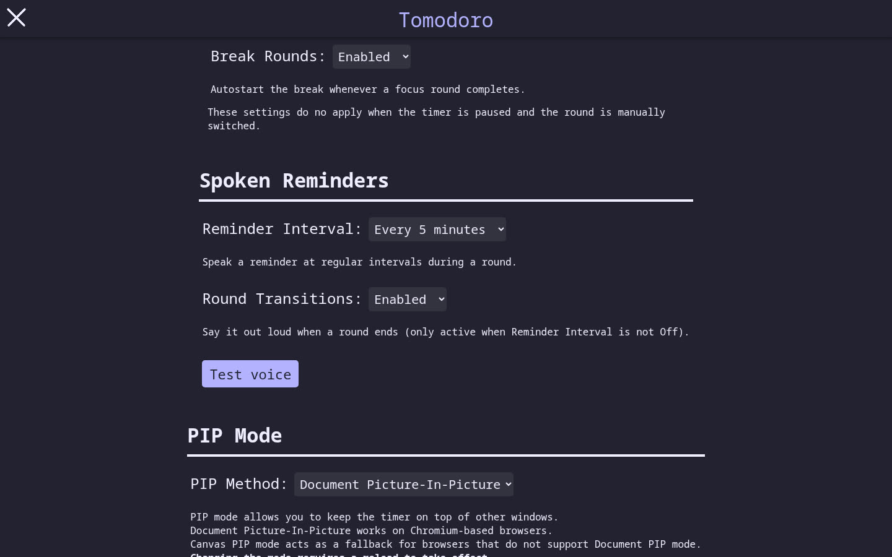
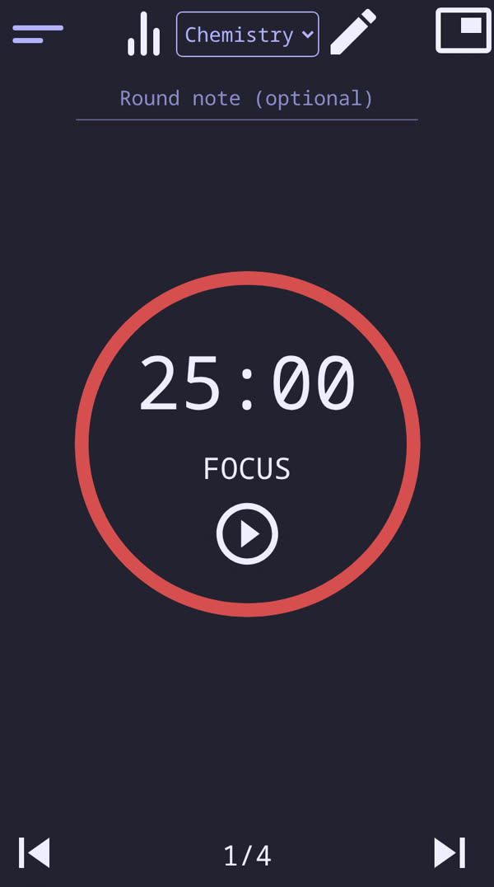

AI writes real code now, and it sounds just as sure when it’s wrong. So I gave IBM Bob a real open-source app that students use, Tomodoro (308★), and one rule: nothing counts unless it’s proven. Bob built its own toolkit to enforce that, shipped the requests users had left open for years, and caught itself every time it was wrong. IBM Bob, with receipts.
Every item below came from the upstream issue tracker or from our own testing, and each one ships with tests.
“It snaps me out of my ADHD hyperfocus.” Tomodoro now says the time left every 1, 5, 10 or 30 minutes, and can announce round ends. Silent unless you turn it on.
Write what you're working on; it's saved with the round, editable in your records, and carried in backups.
Per-task colours in the statistics pie and bars, for the student with seven subjects.
After a reload the picker showed the first task while time went to another. Found by our browser test; it's in the original app too.
Labels, landmarks, round announcements for screen readers, Escape closes panels, visible focus. axe-core: 18 → 0.
Bob's Plan mode verified the autostart option exists (index.js:106, :156). Documented, not claimed.


Drop the folder into any repo. Bob wrote it (runs 8–9); one hook was added by hand after a Bob Shell memory issue on our 4 GB machine.
Read-only explorer. Every claim cites the file:line it opened; VERIFIED vs SUSPECTED.
Must show a failing test before it changes code. No new dependencies, no build step.
Audits Bob's own output: CONFIRMED / WRONG / UNVERIFIABLE, with evidence.
# real output, Bob run 9 ● write_file test/hook.test.js (failing test first) hook › tests: 0 passed, 0 failed ← 29 exist npm test › pass 29 fail 1 ✖ hook.test.js ● write_file .bob/hooks/summarize.cjs hook › tests: 38 passed, 0 failed ✓
issue-to-fix skill — restate, locate with file:line, failing test, fix, README bullet naming the issue.
PostToolUse hook — after every file Bob writes, the whole suite runs and Bob sees the score.
PreToolUse shell guard — blocks one command shape that crashed Bob Shell here.
House rules — upstream's code style, cite file:line, minimal changes.
Costs are the Bobcoins Bob reported. Prompts, full event streams and Bob's last words for every run are in docs/bob-runs/.
| Run | Mode | What Bob did | Bobcoins |
|---|---|---|---|
| 8 | agent + built-in skills | Bob writes the Tune-Up Kit: 3 custom modes, house rules, the issue-to-fix skill, a test-after-write hook | ≈1.0 |
| 9 | Test-First Fixer | Fixes its own hook (it always said “0 tests”): failing test first, then the parser | 0.73 |
| 10 | Plan | Plan for #11 and #8 with file:line touch points; proves #13 is already solved upstream | 0.39 |
| 11 | Test-First Fixer + skill | Issue #11 spoken reminders, 27 tests | 2.05 |
| 12 | Test-First Fixer + skill | Issue #8 notes on focus rounds, notes kept in backups | 3.05 |
| 13 | Test-First Fixer | Boot test that loads the whole app in node:vm; fixes the load crash | 3.10 |
| 14–15 | Test-First Fixer | Accessibility: axe 18 → 0 | 3.69 |
| 16 | Claim Checker | Audits Bob's own summaries: 3 real bugs, 4 wrong claims | 4.24 |
| 17 | Test-First Fixer | Fixes the 3 bugs Claim Checker found | 1.65 |
| 18 | Test-First Fixer | Space/Escape inside text fields stop driving the timer | 0.67 |
| 19 | Test-First Fixer | Upstream bug: task picker vs logged task after reload | 1.16 |
axe-core 4, default rules, main + settings + statistics + tasks.
# clone, then: npm test # 144 tests, zero dependencies python3 -m http.server # the app, no build step bob run --mode claim-checker "check BOB-LOG.md"
Full write-ups in the repo: README.md (what changed), BOB-LOG.md (every prompt, cost and hand correction), TEST-REPORT.md (35 browser flows + axe), docs/TUNEUP-KIT.md, docs/reviews/round2-check.md, docs/BOB-SHELL-NOTES.md.